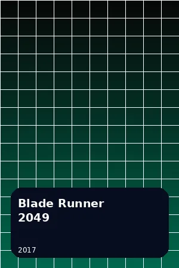
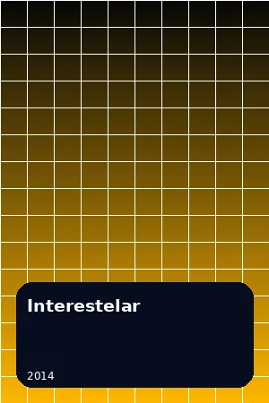
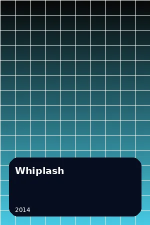
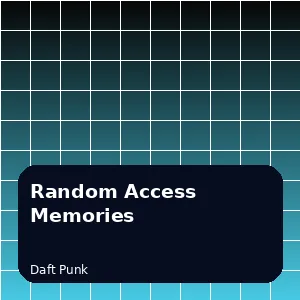
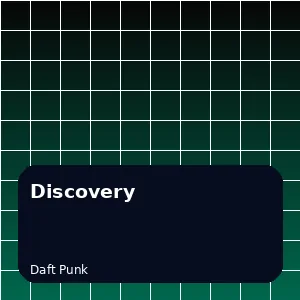
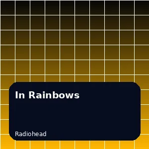

Perfil 3 · Grupo 12
Axel Alva
Backend Developer
Perfil orientado a construir soluciones confiables para logística inteligente, con foco en Backend Developer.
Interacción de rol:
Stack
Habilidades
Herramientas seleccionadas para representar el aporte de este perfil al equipo.
Preferencias
Películas favoritas

Blade Runner 2049
2017

Interestelar
2014

Whiplash
2014
Música
Discos favoritos
Fachada de reproductor: el contenido multimedia pesado se solicita bajo interacción.

Random Access Memories
Daft Punk

Discovery
Daft Punk

In Rainbows
Radiohead
Contacto
Contactá a Axel Alva
Completá el formulario. La interacción se valida en la página y muestra el resultado sin redirigirte a otra pantalla.